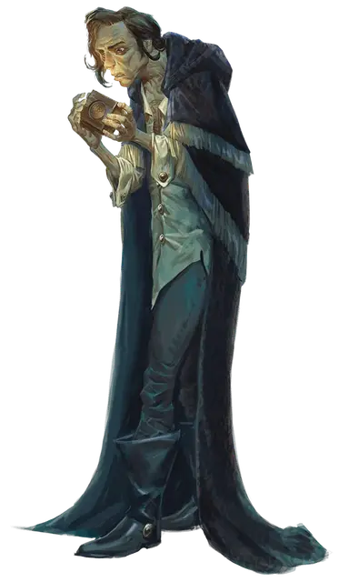

Тёрствелл Вантампур
Thurstwell Vanthampur
Средний Гуманоид (Человек), законно-злой, именной НИП

Класс Доспеха 9
Хиты 5 (2к8 - 4)
Скорость 30 футов
| мод | спас | ||
|---|---|---|---|
| СИЛ | 7 | −2 | −2 |
| ЛОВ | 8 | −1 | −1 |
| ТЕЛ | 6 | −2 | −2 |
| мод | спас | ||
|---|---|---|---|
| ИНТ | 15 | +2 | +2 |
| МДР | 17 | +3 | +3 |
| ХАР | 12 | +1 | +1 |
Навыки Восприятие +5, Обман +3, Проницательность +5, Религия +4
Чувства пассивное Восприятие 15
Языки Общий, Инфернальный, Эльфийский
Опасность 1/8 (25 опыта)
Бонус мастерства +2
Особенности
Тёмная преданность. Тёрствелл совершает с преимуществом спасброски от очарования и испуга.
Использование заклинаний. Тёрствелл является заклинателем 2-го уровня. Его базовой характеристикой является Мудрость (Сл спасброска от заклинания 13). У Тёрствелла подготовлены следующие заклинания жреца:
• Заговоры (неограниченно): указание [guidance], священное пламя [sacred flame] (см. "Действия" ниже), чудотворство [thaumaturgy];
• 1 уровень (3 ячейки): приказ [command], обнаружение зла и добра [detect evil and good], убежище [sanctuary];
Действия
Священное пламя (заговор). Похожее на огонь сияние нисходит на существо, которое Тёрствелл видит в пределах 60 футов. Цель должна преуспеть в спасброске Ловкости Сл 13, иначе она получает 4 (1к8) урона излучением. Для этого спасброска цель не получает преимуществ от укрытия.
Описание
Хилый и завистливый 42-летний мужчина с инфернальной головоломкой [infernal Puzzle Box] в руках. Если Тёрствелл знает о незваных гостях, он успеет запереть её в сундуке, а ключ сунет в карман мантии.
Тёрствелл командует несколькими бесами, которые влетают и вылетают через дымоход, но к приходу персонажей здесь только одно такое существо. Бес невидим, прячется в камине и атакует любого, кто угрожает Тёрствеллу.
Незнакомцев Тёрствелл встретит самым негостеприимным образом — наложит священное пламя [sacred flame] на ближайшего из них. В тот же ход он наложит на себя бонусным действием убежище [sanctuary] и использует перемещение, чтобы спрятаться под кроватью, пока бес его защищает. Если его возьмут в плен, он будет причитать, что тупые стражники не смогли защитить его, и тянуть время, надеясь, что захватчики отвлекутся и дадут ему шанс сбежать.